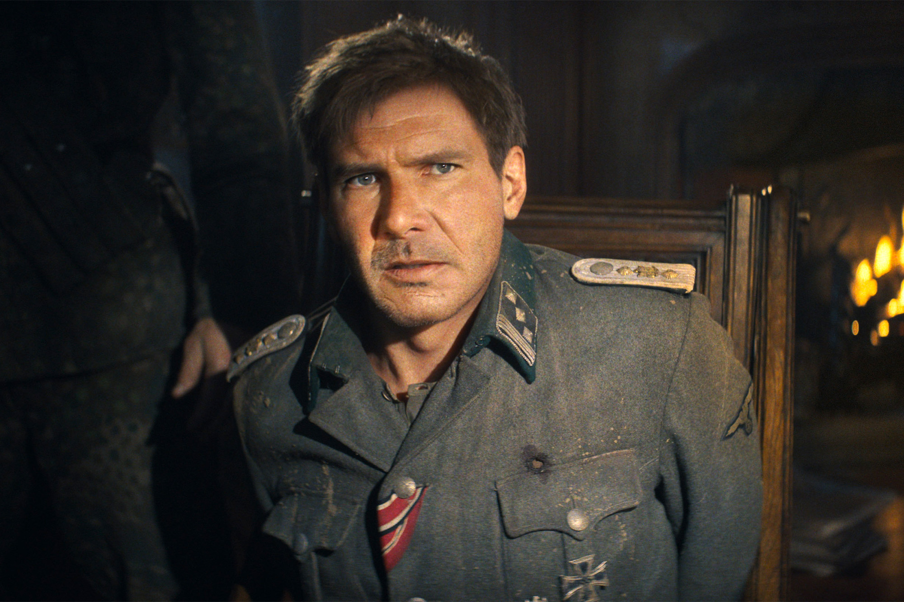
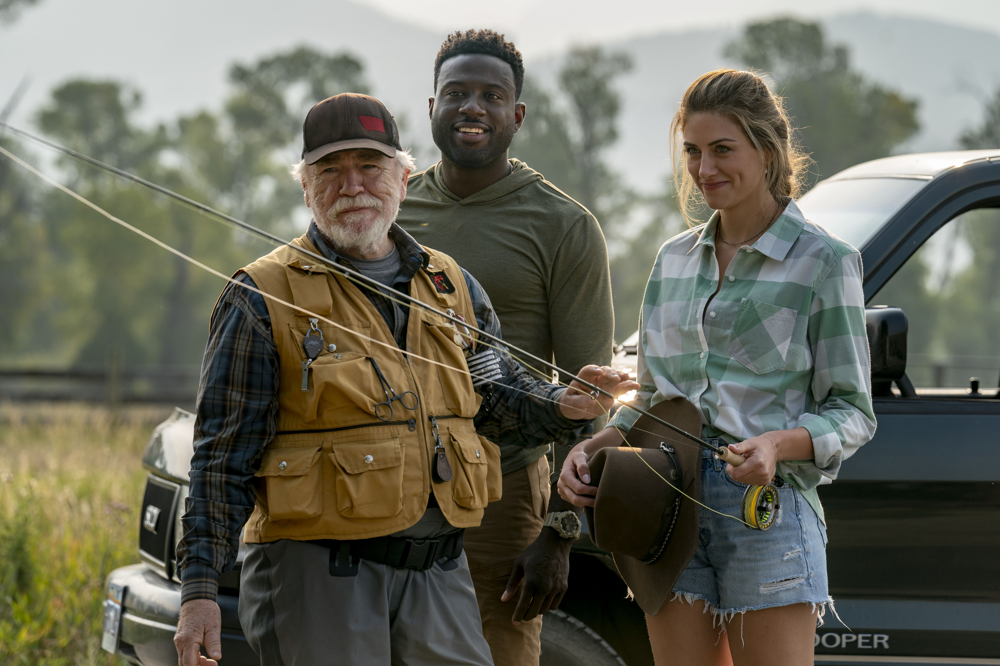
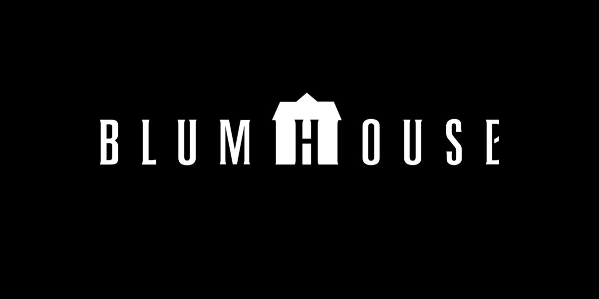

The latest News
Here you can find the latest news about upcoming projects and film related topics.
Harrison Ford Talks Seeing De-Aged Self In ‘Indiana Jones & The Dial Of Destiny’: “That’s What I Looked Like 35 Years Ago”
Harrison Ford is defending the de-aging process he underwent for a flashback sequence in Indiana Jones and the Dial of Destiny. The fifth installment of the James Mangold-directed film premiered at the Cannes Film Festival where the star got a five-minute standing ovation.
During a press conference, Ford talked about the technology used for the de-aging process that made him look younger in the opening sequence of the film.
“The technology has evolved to the point where to me, seems very realistic and I know that that is my face,” Ford said. “It’s not a kind of Photoshop magic, that’s what I looked like 35 years ago because Lucasfilm has every frame of film that we’ve made together over all of these years. And this process, this scientific mining of this library was put to good [use]…” Ford continued, “It s just a trick unless it s supported by a story and it sticks out like a sore thumb if it s not honest, it s not real… I mean, emotionally real. And so I think it was used very skillfully.”
The actor said he was “very happy” with the end result but doesn’t look back and say, “I wish I was that guy again,” adding, “I’m real happy with age. I love being older. It was great to be young, but s**tfire I could be dead, but I’m still working.”
Watch the full press conference in the video posted below. Ford has previously also stated that this film will be the last time he will embody the character of Indiana Jones.
“This is the final film in the series, and this is the last time I ll play the character,” Ford told Total Film magazine. “I anticipate that it will be the last time that he appears in a film.”
Indiana Jones and the Dial of Destiny is set to be released on June 30, 2023.
‘Mending The Line’: Blue Fox Entertainment Acquires Veteran Drama Starring Brian Cox & Sinqua Walls
The story follows Colter (Walls), a marine who has just returned home after being wounded in Afghanistan on his last patrol. His doctor (Patricia Heaton) at the VA hospital introduces him to a Vietnam War veteran (Cox) who has been treated at the facility for decades and teaches him to fly fish, hoping it will help the young man deal with his physical and emotional trauma.
Mending the Line opened the 2022 Woodstock Film Festival and later played the San Diego Film Festival, where it won the Valor Award, given to a military-themed film that conveys the impact of war while unfolding the emotional layers and the human condition of fighting a war. Perry Mattfeld (In the Dark), Honorary Oscar winner Wes Studi (The Last of the Mohicans) and Chris Galust (Give Me Liberty) also star in the pic made in partnership with the U.S. Marine Corps Entertainment Media Liaison Office and the U.S. Department of Defense, which was awarded a Big Sky Film Grant by the Montana Film Office.
Joshua Caldwell (Infamous) directed from a script written by Stephen Camelio, with Carl Effenson (Mudbound) producing for Artimage Entertainment, along with Kelly McKendry of August Point Productions, Scott MacLeod of CKM Entertainment, Caldwell and Camelio. Cox and Walls exec produced alongside Mark Comora and David Comora.
Said Blue Fox’s James Huntsman, “Joshua and Stephen have created a must-see movie in MENDING THE LINE. It has all of the elements audiences are craving today with a talented cast, beautiful vistas of the American west, an uplifting story and a nod to our veterans. We are proud to partner with the filmmakers on this story of hope and discovery.”
“I am absolutely thrilled to have Blue Fox Entertainment on board for ‘Mending the Line,'” added Caldwell. “Their support and belief in this film is a testament to their dedication to meaningful storytelling. I cannot wait for audiences to experience this film in theaters and I am grateful to have such incredible partners who share our passion for this story.”
Blumhouse’s ‘Imaginary’ Gets 2024 Release Date From Lionsgate
Blumhouse’s Jeff Wadlow-directed horror movie Imaginary will be released by Lionsgate on February 2. It’s the first time in quite some time that the two studios have teamed up.
In the movie, which Wadlow co-wrote with Greg Erb and Jason Oremland, a young woman returns to her childhood home only to discover that the imaginary friend she left behind is very real and very unhappy she left.
Wadlow is also producing with Blumhouse Boss Jason Blum. EP is Blumhouse’s Ryan Turek.
The feature reps the third time that Wadlow has worked as a director for Blumhouse after Truth or Dare ($95.3M WW) and the early 2020 pre-Covid title, Fantasy Island ($49.4M WW). Wadlow also directed Kick-Ass 2 ($61.7M WW).
Currently dated on Feb. 2 next year is Warner Bros. Barry Levinson directed Robert De Niro mob film, The Wise Guys.